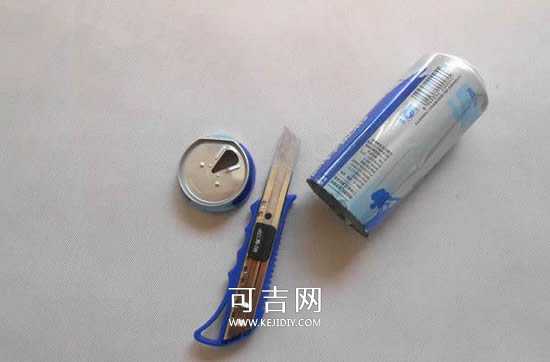
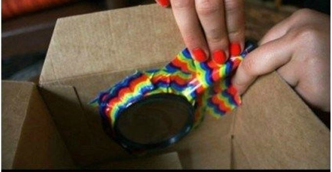

制出将来之少年中国者,则中国少年之责任也.故今日之责任,不在他人,而全在我少年.少年智则国智,少年富则国富,少年强则国强,少年独立则国独立,少年自由则国自由,少年进步则国进步,少年胜于欧洲则国胜于欧洲,少年雄于地球则国雄于地球.红日初升,其道大光；河出伏流,一泻汪洋；潜龙腾渊,鳞爪飞扬；乳虎啸谷,百兽震惶；鹰隼试翼,风尘翕张；奇花初胎,矞矞皇皇；干将发硎,有作其芒；天戴其苍,地履其黄；纵有千古,横有八荒,前途似海,来日方长.美哉我少年中国,与天不老；壮哉我中国少年,与国无疆!制出将来之少年中国者,则中国少年之责任也.故今日之责任,不在他人,而全在我少年.少年智则国智,少年富则国富,少年强则国强,少年独立则国独立,少年自由则国自由,少年进步则国进步,少年胜于欧洲则国胜于欧洲,少年雄于地球则国雄于地球.红日初升,其道大光；河出伏流,一泻汪洋；潜龙腾渊,鳞爪飞扬；乳虎啸谷,百兽震惶；鹰隼试翼,风尘翕张；奇花初胎,矞矞皇皇；干将发硎,有作其芒；天戴其苍,地履其黄；纵有千古,横有八荒,前途似海,来日方长.美哉我少年中国,与天不老,与国无疆
玩转小发明
磁铁上旋转
の
小风车
- 一、先在硬纸板上按照下图画线，然后沿杯子边缘向上用剪刀剪开。然后想斜上方把每一片扇页折一下。
- 二、杯子中间打孔，中间装上转轴和磁铁。另外几块磁铁固定在一个塑料木柄上，当然你也可以利用其它 的工具。最后把它们组装在一起。图片中是利用双面胶固定的。
- 三、把制作完成后的小风车放在吊扇下面，你就可以看到小风车做行星运动了。用嘴吹也可以正常转动！
- 四、这样一个简单的科学小制作就完成了
自制简易
の
小台灯
- 前期准备的材料：易拉罐、铁丝衣架、带插头的灯座、灯泡、钳子、剪刀、小刀、螺丝刀、绝缘胶带和记号笔等。
- 一、先小心把易拉罐的瓶口切割掉，戴上手套哦!

- 二、再把侧面剪去一部分，可以让光从这里照射出来。把易拉罐底部挖孔，装入灯座后再安装上灯泡。
- 三、把衣架折弯，这样就可以立在桌面上了哈。
- 四、把易拉罐安装到衣架上，这样就完成了台灯的制作啦~
- 五、看看有没有裸露的电线，再用绝缘胶带包起来，打开开关看效果吧\(^o^)/~
易拉制作
の
信号放大器
- 一、首先，找一个废弃易拉罐，按下图所示把易拉罐的底部割下。
- 二、易拉罐的上口也要剪开，但白线标识的地方不要剪断。
- 三、沿着与白线正对的另一面，画一条线，然后从底部沿线剪开
- 四、把易拉罐展开，让无线路由器天线从易拉罐拉环口处穿过，形成一个反射面，调整反射面方向，使其正对着手机、笔记本等终端就可以实现信号放大了。
空中旋转
の
飞机
- 供参考的图纸，我们就是要做一个这样的飞机。
- 前期准备材料有：玩具马达、螺旋桨、9伏电池、9伏电池连接器、滑动开关、电线、2个钩子、绳子、刻刀、热胶枪、烙铁和焊料、胶带、颜料和刷子
- 一、打印模板，并剪下飞机的各个部分。将模板放到纸板上，沿着边描绘。然后用刻刀切出。模板下载地址看这里【飞机图纸】。
- 二、在切割硬纸板之后，我们将要给它们上色。如图的经典色供大家参考。
- 三、用喷漆做出基本色，并用丙烯颜料画出其余的细节。
- 四、将约3英寸红色电线焊接到电机右侧端子和滑动开关上的中间。如果您不确定电机上的哪个端子可以使用，只需添加电源并检查它旋转的方向。确保它与您的螺旋桨相对应。
切断电池连接器上的电线，留大约1/2英寸就可以了。将正极电线焊接到开关上，将负极电线焊接到约2.5英寸的黑色电线上。将电池连接在两根电线之间。切掉多余的黑线，并将剩余的一端焊接到电机上。
- 五、现在我们可以将马达和电池粘在机身上!放置组件，使电机突出超过机身前部1/4英寸。这是为纸板发动机留出空间。一旦您对所有位置的位置感到满意，请将电机、电池和开关用热熔胶粘到机身内部。将电线粘到电池两侧。
- 六、以与第一个相同的方式胶合第二个机身部件。确保为发动机和尾部留出空间。将两侧向内折叠到电池后面以形成锥形。将机身尾端粘在一起。
- 七、将尾翼滑入插槽中。一旦到位，在与机身连接的区域涂上一层胶水。用废纸片擦去多余的胶水。底部机翼上的胶水距离车轮后部大约3/4英寸。
- 八、将机翼末端1.5英寸处的大翼支柱和刚好位于驾驶舱前方的较小翼支柱胶合。
- 九、在每个机翼支柱的顶部涂上胶水并连接机翼。
- 十、通过翼尖抬起飞机，找到飞机的重心，并调整手指直到找到平衡点。沿此线拧入一个钩子。飞机的性能在很大程度上取决于弦的长度，发现16英寸效果最好。可选，但强烈推荐：在绳子上添加钓鱼旋转接头。
- 十一、将挂钩拧在天花板上或任何想要展示飞机的地方。打开电机并进行小型圆形推动。可能需要几次尝试才能正确运动，以在一个圆圈中飞行。
自制简易
の
全息投影仪
- 前期准备材料：亚克历板 1块(可以到文具店问下，这里用的是制作标书时常用的透明封面)、瓦楞纸片 若干、黏合材料、平板电脑、全息投影源 若干(图片视频都可以)
- 一、根据放映设备确定亚克历板的大小，对8寸平板电脑，A4规格刚刚好满足需求。
- 二、将A4大小的亚克历板绘出一正五边形，并划分5份等腰三角形，腰的长度约为10cm。
- 三、裁掉其中一份等腰三角形，折出一个金字塔结构，边缘衔接处用胶水固定。亚克历板折叠前最好先用针状物刻一下。
- 四、然后加上细节。
- 五、用废纸盒做出一个架子，准备好平板电脑，之后就可以制作全息图源了。
- 六、图片格式一般是正四方形，将被投影物的四视图按上图般排列。
- 七、像这样将平板电脑屏幕盖在金字塔顶部的架子上，调整好角度，利用干涉和衍射原理投影在塑料片上形成虚拟图像。

- 八、被投影对象不一定局限于四视图，人物、漫画、模玩神马都可以。
- 九、也可以将动画视频 全息投影出来。
DIY
の
手机投影仪
- 前期准备材料：个鞋盒或其他包装纸盒、一个较小的放大镜、回形针、智能手机、小刀、胶带、黑色烤漆（可选）等材料
- 一、找出你的盒子的中心，把你的放大镜放在中间，走线周围的镜头。
- 二、切孔出来。
- 三、调整镜头。
- 四、大盘回落的放大镜，确保一切是密封的，没有光泄露英寸带下来的盒子任何松动的两侧

- 五、通过滑动你的充电器连接线戳在包装盒背面的孔。
- 六、用钳子塑造自己模型的支架。
- 七、摆弄手机，同时把屏幕亮度调高。
- 八、关闭对话框，找到一个空白的墙投影
- 九、把手机上的立在框中，移动电话来回在框中找到聚集点。
DIY
の
防盗报警器
- 如果你是一个人住，总担心晚上的安全问题，也许可以自己动手做个开门报警器。制作过程不复杂，感兴趣就一起来看看怎么做的吧~
- 一、首先，将两节电池以相反方向粘在夹子的两边。
- 二、接着，给电池两极都焊上焊点。
- 三、塑料夹子的两头钻孔，扭上螺丝钉。
- 四、将一个报警用的蜂鸣器焊接到电池与螺丝钉之间。
- 五、再用导线将其他部位连接起来。
- 六、将报警器粘贴到门上，并把一个硬纸片绑上线，做为绊线粘贴到门另一边。
- 七、这个防盗报警器制作完成，只要门被打开蜂鸣器就会发出声音，达到报警的效果。